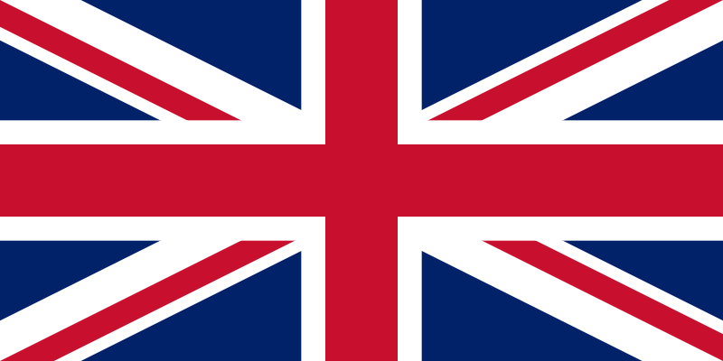

When did the Battle of Bratin started and what coused the war to start?
30 June 1940The battle of Britain started on 30 June 1940 when Fracne was felled because Nazi Germany and Hermann Goering because he was the general and leader of the military in Nazi Germany. When the Germans attacked Britain, they named the operation a Sea Lion because they could destroy Britain and have control of the Royal Navys.
Why did the Germans attack Britain, and what was their purpose in
attacking Britain?
Germans attacked Britain because Hitler wanted to attack Britain. After all, the British soldiers had a lot of casualties when they were fighting with France, because of that, Hitler did not want Britain to recover Britain's army, and he started to invade Britain because he wanted to make their military weaker; he also wanted to capture all of Britain because he did not want to have any other country that is against him. That way, he invaded the whole of Europe without stopping or getting defeated by another country.
Why did Germany decide to attack Britain from the air?
Germany attacked from the air. They wanted to destroy the ARF(Royal Air Force). When they destroyed the RAF, they could control the English Channel. When they had control of the English Channel, Germany could send their navies to Britain. That way, the navy and German airforces could boom Britain, and the British could surrender to Germany.

What was the political impact of the Battle of Britain on Canada’s foreign relations during and after WWII?
On August 26, 1940, Canada joined the war to support Britain from Nazi Germany Canada had joined the war because Canada was allies of Britain. When Britain was at war, Canada needed to join the war according to war rules. Canada needed to support its ally from Nazi Germany because of that, Canada joined the war. During the war, Canada had a critical role in helping the Britain. Canada was training the pilots because the war was usually in the air. After all, Canada needed to train the pilots to fight with Germany in the air. It required strong air power to defeat Germany and save Britain from the Germans.


How did Canada support Britain during the Battle of Britain aside from sending pilots?
Canada supported the British by forcing the Canadians to join the war and become pilots. They also forced French Canadians to join the war to support Britain against the Germans. RAF had reinforced their planes and pilots by increasing the number of pilots going to war and having upgraded weapons, engines, and papers in their planes; that way, they could be of high quality and robustness. When the year was 1940, Ahoust 30 RAF started to attack 100 enemy planes, and they had 12 Victoires when they get rid of 100 enemy planes.
What challenges did Canadian pilots face while participating in the Battle of Britain?
1. Point Germany attacked from the air. They wanted to destroy the ARF(Royal Air Force). When they destroyed the RAF, they could control the English Channel. When they had control of the English Channel, Germany could send their navies to Britain. That way, the navy and German airforces could boom Britain, and the British could surrender to Germany.
2. When Canadian pilots felt high pressure because they were doing risky jobs like the plane can cause damage, or when the plane goes too high, the motor of the aircraft can cause serious damage and that damage can cause the motor to burn because they feel stress(pressure).
What was the political impact of the Battle of Britain on Canada’s foreign relations during and after WWII?
Canadian fighter planes had a major increase. They had 48 RCAF built by the end of the war, and they also wounded the Germans with the force they had during the war because British Canadians became a strong country during the war.
